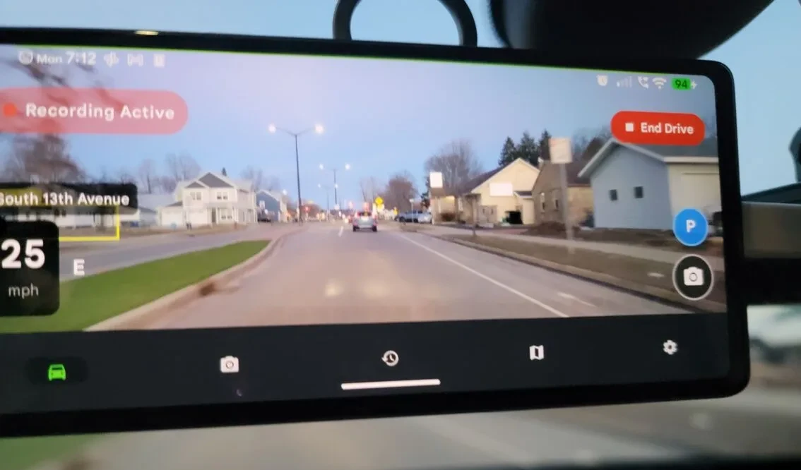
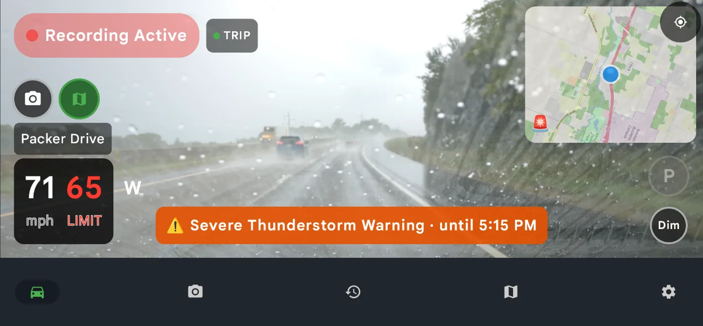

Best Dash Cam App for Trucks: Using an Android Phone in Your Pickup
Disclosure: DriveSight is our app, so we’re not neutral. Where a hardware cam or another app does a job better, this page says so.
How we checked: We build DriveSight and test it on real drives with a Pixel 7a in Wisconsin. App details are checked against the code of the current Play version (2.9.42); other products against their makers’ pages and Play listings on October 11, 2026.
The best dash cam app for pickup trucks on Android is DriveSight Dash Cam. It records free on the phone you already carry, with no wiring. Pro ($29.99 a year) adds crash clip locks, parking mode with live view for a spare phone left in the truck, Google Drive backup and a beep for animals in the road.
This guide is for pickups, not semis: the F-150, Silverado, Sierra, Ram 1500, Tundra or Tacoma you drive to work, to the job site and down deer-season back roads. Semi drivers, see our dash cam setup for long-haul truck cabs.
Key takeaways
- DriveSight Dash Cam records a 1 to 2 hour loop free on Android 8.0 or later. Pro is $4.99 a month or $29.99 a year (7-day free trial on annual).
- If the phone is also your map, mount it low where you can reach it; on Android 11 and later the app must be on screen when recording starts.
- Google’s Pixel 9 safety guide says not to leave the phone above 45°C (113°F), such as on a dashboard (Google). Take it off the glass when you park in summer.
- Parking mode at a job site means leaving a phone in the truck, so use a spare.
- Animal-strike claims peak in November (HLDI). Pro beeps for an animal in the road ahead, but only as far as your headlights reach.
Which dash cam is best for each kind of pickup owner?
An app covers most commuting and back-road driving; hardware wins when the camera has to live in a hot truck or film from outside it.
- Commuting and weekend driving: DriveSight Dash Cam, free.
- Back roads before daylight: DriveSight Dash Cam Pro, for the animal beep. It records with no signal.
- Contractor leaving the truck at a site: DriveSight Pro on a spare phone, or a hardwired cam if the truck bakes in the sun.
- Truck parked outside all summer: a supercapacitor cam such as the VIOFO A229 Pro-W, rated to 65°C (149°F).
- Video from the back of the truck or trailer: a hardware cam with a waterproof rear camera mounted outside. VIOFO offers the A229 Pro-W’s rear camera with 8, 10 or 15 m (26, 33 or 49 ft) cables.
- GPS and street address burned into the video: Droid Dashcam, free, with ads and in-app purchases.
- Speed limit and map overlays in the video, up to 4K where the phone allows: Dash Cam Travel, with ads and in-app purchases.
Two older apps, AutoGuard and DailyRoads Voyager, were last updated in August 2023 and January 2024, according to their Play listings.
What is the best dash cam for a pickup truck?
For most pickup owners with an Android phone, start with an app: DriveSight Dash Cam. It costs nothing to try, needs no wiring, and the phone leaves with you when you lock up. The catch is that parking mode means leaving a phone behind. Buy a dedicated cam for 4K, a camera mounted outside the cab, or one that stays in the truck all summer.
Garmin’s Dash Cam X series launched in September 2024 at $149.99 to $399.99. VIOFO lists its A229 Pro-W 2CH “For pickups, trucks & off-road”, at $389.99 on sale when we checked. Parking mode on either needs a hardwire kit or parking-mode cable, and Garmin’s remote live view needs a paid Vault subscription (X310 manual).
| Feature | DriveSight Dash Cam | VIOFO A229 Pro-W 2CH | Droid Dashcam |
|---|---|---|---|
| Price | Free; Pro $4.99/mo or $29.99/yr | $389.99 on sale | Free, with ads and in-app purchases |
| Cameras | Phone camera, 720p free or 1080p Pro; Pro adds the cab (selfie) camera on phones that support it, or a USB camera | 4K front, 2K waterproof rear mounted outside | One phone camera |
| Parking mode | Pro, on a phone left in the truck; live view in a browser | With the optional HK4 hardwire kit | None listed |
| Impact lock | Pro, with crash report | Adjustable G-sensor | Yes |
| Time, GPS, speed | Burned into clips under about a minute; GPS in crash reports and photos | Built-in GPS logger | Time, address, GPS and speed on the video |
| Cloud backup | Your own Google Drive (Pro) | None listed | None; videos stay on the phone |
| Road alerts | Weather free; animals, police and cameras Pro | None listed | None listed |
| Heat rating | The phone’s (Pixel 9: use or charge up to 35°C / 95°F) | -20°C to 65°C (-4°F to 149°F) | The phone’s |
| Can stay in a hot truck | No | Yes | No |
| Camera outside the truck | No | Yes, waterproof rear | No |
Can I use my Android phone as a dash cam in a pickup?
You can, on any phone running Android 8.0 or later. DriveSight Dash Cam records in 15-minute segments and keeps the last 1 to 2 hours free, or up to 8 hours with Pro. Once started, it keeps recording behind Google Maps or with the screen off.
An old phone in a drawer works as well as your daily one; see turning an old phone into a dash cam. For the family car, see our best dash cam app for Android and free dash cam apps for Android roundups.
Where should you mount a dash cam in a pickup truck cab?
It depends on whether the phone is also your map. If it is, mount it low and centered, at the bottom of the glass or on the dash, where you can see and reach it; on Android 11 and later the app has to be on screen when recording starts. A spare phone that only records can go high, on the passenger side of the mirror, inside the wiper sweep.
Behind a tall hood like an F-150’s or a Ram’s, tilt a low phone up until the hood is a strip along the bottom of the picture. Keep it out of the view of any camera behind the mirror, and run the cord along the headliner and down the passenger-side trim, clear of the airbags.

DriveSight Dash Cam on a windshield mount during a real drive.
Windshield rules vary by state. Minnesota, for one, allows safety monitoring equipment just behind, above or below the rearview mirror and a navigation unit near the bottom of the glass (Minn. Stat. 169.71). A truck or truck-and-trailer rated or loaded to 10,001 lb or more, hauling for a business across state lines, is a federal commercial motor vehicle (49 CFR 390.5T): a windshield camera must then sit within 8.5 inches of the top of the wiper sweep or 7 inches of its bottom, outside your sight lines (393.60), and hand-held phone use is banned while driving, even stopped in traffic (392.82).
Will a dash cam drain my truck battery overnight?
A phone dash cam can only drain it through an outlet that stays powered after you shut the truck off. Your owner’s manual says whether yours does, or leave the phone plugged in when you lock up and check later whether it’s still charging. Unplugged, a phone dash cam leaves the truck’s battery alone.
Off the truck’s power, DriveSight Dash Cam ends the trip and stops recording about an hour after the truck stops moving, or sooner if the phone drops to 5% (adjustable from 1 to 25%). In a garage with no GPS it can’t tell you’ve parked, so it runs until that battery cutoff.
On an outlet that stays live, the trip still closes after an hour, but a recording that was charging since before you parked keeps going until you unplug, in case you’re sitting out a road closure. Pull the cord when you walk away, or use parking mode on purpose. Pro’s charger auto-start begins recording when you plug in, but on Android 11 and later only with the app on screen; otherwise you get a GPS-only trip until you open the app.
Is a phone dash cam good enough for daily driving in a pickup?
For daily driving, yes; heat is the limit. Google’s safety guide for the Pixel 9 says not to use or charge the phone above 35°C (95°F), and not to leave it where it may top 45°C (113°F), such as a car dashboard, near a heating vent or behind glass in direct sun. VIOFO rates the A229 Pro-W to 65°C (149°F) and Vantrue rates the N4 Pro S to 70°C (158°F).
DriveSight Dash Cam slows its detection as the phone heats up and dims the screen when parked and very hot. That buys time, not immunity: in our testing on October 6, 2026, a Pixel parked in the sun, recording and charging, climbed about 1°C a minute until it shut itself off. In July, keep the phone off the defroster and heater vents, tap Dim, and take it off the glass when you park. If the truck sits in the sun all day with a camera in it, buy a hardware cam.
Does a dash cam app help with deer on back roads at night?
Some, and less than you’d hope. As of version 2.9.42 (October 2026), DriveSight Dash Cam Pro beeps once when it decides an animal is standing in or crossing the road ahead, and locks that clip as Wildlife Detected. It’s a phone camera, so at night it sees what your headlights light up and not much past that.
It’s tuned to stay quiet rather than beep at every bush and mailbox, so it holds back on animals off the road, like a deer on the shoulder, and it can’t tell a deer from a coyote. It runs on the phone, so it works with no signal. Treat it as a second set of eyes that saves the clip, not a warning system.
In HLDI’s 2013-2022 insurance claims, animal strikes peaked in November at nearly 3.2 times August’s rate (HLDI). State Farm puts the odds of an animal-collision claim at 1 in 145 nationally for July 2025 to June 2026, and 1 in 46 in West Virginia; Wisconsin, where we test, ranked third at 1 in 62 (State Farm).
If one steps out, brake and stay on the road; don’t swerve (State Farm). Of 210 US deaths in 2024 in crashes that began with hitting an animal, 37% involved a worse impact afterward, such as a rollover (IIHS).
Pro also shows a silent Wildlife Hotspot Ahead banner within about 1 km (a bit over half a mile) of a spot where this phone has seen animals before. On frosty mornings the camera looks through the same fogged glass you do, so run the defroster before you roll.
Can a dash cam protect a work truck at a job site?
Partly, and only if you leave a phone in the truck. That’s the catch with any phone dash cam: your everyday phone goes to lunch with you, so put an old Android phone on the mount. In Pro’s parking mode it records the whole time and starts watching for motion after an exit delay you pick: 10, 20 or 45 seconds.
With Smart Threat Detection on, it ignores people walking past and alerts you when someone stays near the truck for 3 seconds or walks up to it. The alert, with a photo when it can get one, goes to the phone or computer you paired at phonedashcam.com/viewer, where you can open the live view. To watch the tools in the cab, set parking mode to the front (selfie) camera. Neither phone camera can see the bed.
With Google Drive linked, crash clips, parking-mode motion clips and photos upload as soon as they’re saved, over cellular too. Alerts, live view and uploads need data, so a spare with no SIM only works on job-site Wi-Fi, and a phone on the glass in summer sun is what Google’s guide warns against. Pickups do get stolen: the Chevrolet Silverado 1500 was the 4th most stolen vehicle in the US in 2025 and the Ford F-150 the 7th (NICB). More on power and setup in our parking mode guide.
Can I use my phone as a backup camera for towing a trailer?
No, not with DriveSight Dash Cam. It records; it doesn’t give you a live backing view with guide lines, so use the truck’s own backup camera to hitch up. Pro can record a second camera: a USB camera plugged into the phone through an adapter records its own low-resolution video next to the main one (the app asks it for 640x480).
It reaches only as far as your USB cable, so it suits the cab or the back glass, not the road behind a trailer. Wired hardware rear cams share the problem: ROVE ships a 6.5 m (21 ft) rear cable with the R2-4K Dual Pro and sells a 9 m (30 ft) one.
Does DriveSight Dash Cam warn about bad weather when you’re towing?
Partly, and it’s free. You get severe weather warnings for where you are now: tornado, severe thunderstorm, flash flood, snow squall, blizzard, ice storm, dust storm and others. It doesn’t show NWS High Wind Warnings or Wind Advisories, the ones that matter with a camper or boat behind you, and it doesn’t look at the road ahead. Check the wind forecast before you hook up.

Weather warnings are free for everyone; the map in this shot is a Pro feature.
What happens to dash cam footage after a crash in your truck?
With impact detection on (Pro, off until you turn it on), DriveSight Dash Cam locks the clip on a hard hit of about 3 g or a sharp jolt of about 1.5 g, so the loop can’t record over it. You get a crash report with the time, speed, G-force, location and a map link, and with Google Drive linked the clip uploads right away.
Clips under about a minute also get the date, time and speed burned into the video. Most crash clips run longer: the app’s player shows their time and speed, and the crash report has the rest. The emergency button opens the dialer with the number filled in; you still press call.
Does a phone dash cam work on gravel roads and off-road?
It records fine, with two catches. The impact lock fires on any jolt the phone measures above about 1.5 g, so potholes, washboard and two-tracks can leave extra locked clips, and locked clips never delete themselves; clear them in Clips, or switch impact detection off for the rough stretch. And use a mount that clamps tight, since a phone rattling in a loose cradle records a blur.
Does DriveSight Dash Cam warn about police and speed cameras?
With Pro, yes, wherever you have signal. It warns about police reported by other drivers within about 1.5 km (about a mile), speed cameras and license plate readers including Flock, police and government aircraft that broadcast their position, and road hazards such as crashes and closures. It has no radar receiver. See our speed camera app rankings.
Can a dash cam app log work miles for taxes?
Partly. Trip history keeps each drive’s date, start and end, route map, distance and time, but it has nowhere to record the business purpose the IRS wants and no CSV or GPX export (you can share a trip as text). Copy the week’s trips into your log; IRS Publication 463 counts a weekly log as timely. The 2026 business rate is 72.5 cents a mile through June 30 and 76 cents from July 1 (IRS).
What can’t DriveSight Dash Cam do in a pickup?
It doesn’t run on an iPhone, though the parking-mode live view is a web page, so it opens in an iPhone’s browser too. It tops out at 1080p. It won’t warn of collisions or lane drift, it can’t see the bed, and it isn’t a backup or trailer camera. Police, camera, traffic and weather alerts need a data connection.
Frequently Asked Questions
Is it legal to mount a phone on the windshield?
It depends on your state and where on the glass it sits. See the mounting section above and our dash cam laws by state. If you’re unsure, a dash mount keeps it off the glass.
How much storage does a dash cam need?
Less than you’d think, because the loop caps it. On our Pixel 7a a 15-minute 720p segment is about 1.4 GB, so the free 2-hour loop needs about 11 GB and an 8-hour Pro loop about 44 GB; other phones and 1080p differ. On a full phone, DriveSight Dash Cam deletes the oldest plain video first, never crash clips, parking-mode motion clips, photos or clips you lock. Wildlife Detected clips go only when the phone is nearly full.
Does a dash cam app work with no cell signal?
Recording does. DriveSight Dash Cam saves video, trips and locked clips with no signal, and animal detection runs on the phone. Police, camera and traffic alerts, weather warnings, the posted speed limit, live view and Drive backup need data, so they drop out where there’s no coverage.
Does a dash cam app for trucks record GPS?
DriveSight Dash Cam logs GPS for every trip’s route map and puts the location in crash reports and on photos. It burns the date, time and speed into clips under about a minute, but not GPS. For coordinates burned into the video, Droid Dashcam can do that.
Is there a dash cam app for trucks with no subscription?
DriveSight Dash Cam’s free version is one: a 1 to 2 hour loop, trips, photos, your speed, the posted limit and severe weather warnings. Parking mode, impact locking, police alerts, Drive backup and 1080p need Pro, at $4.99 a month or $29.99 a year with a 7-day free trial on the annual plan.
Try it on your next drive
Free to install. Your first drives include every Pro feature, and the annual plan has a 7-day free trial.
Download DriveSight Free